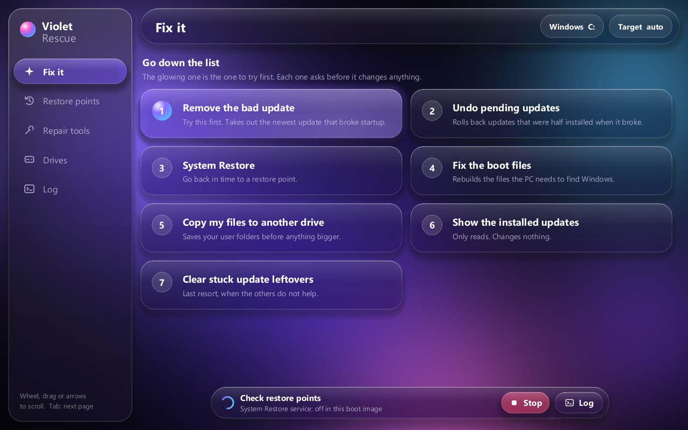
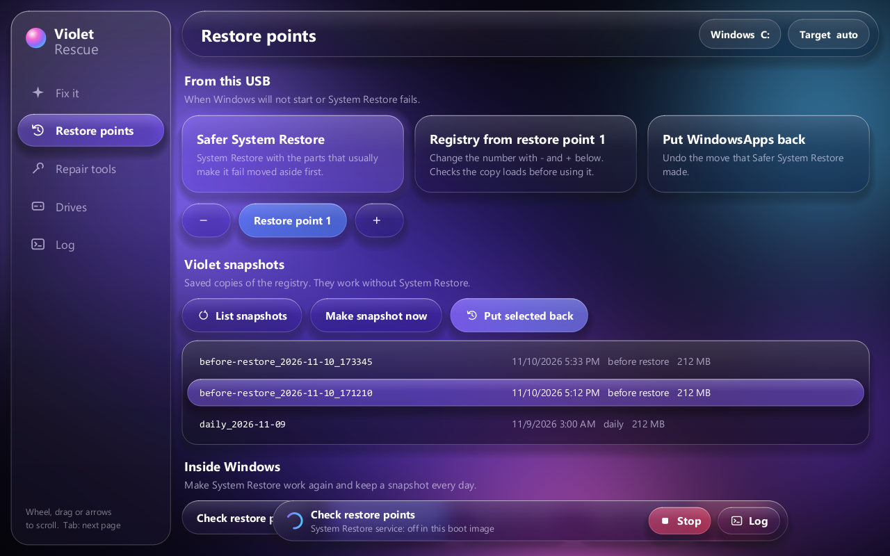
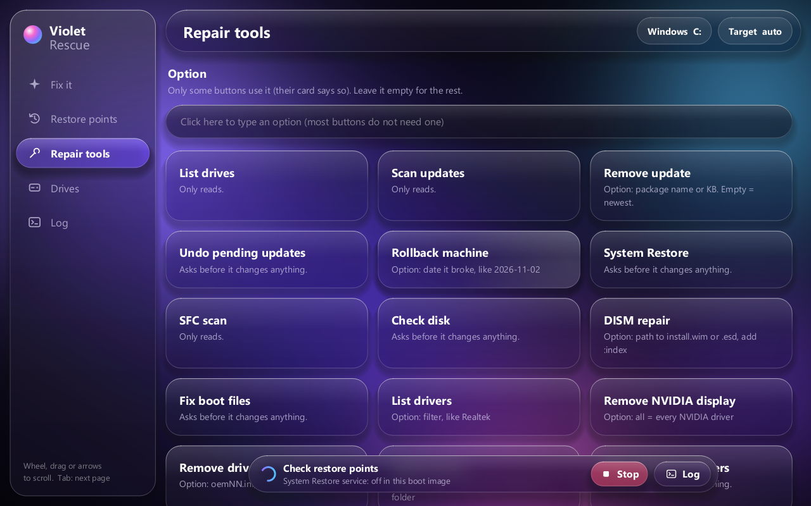
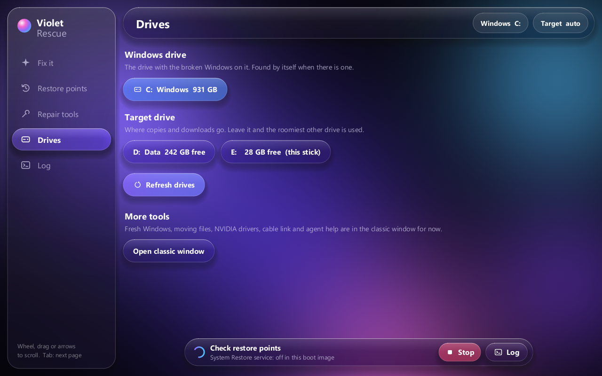
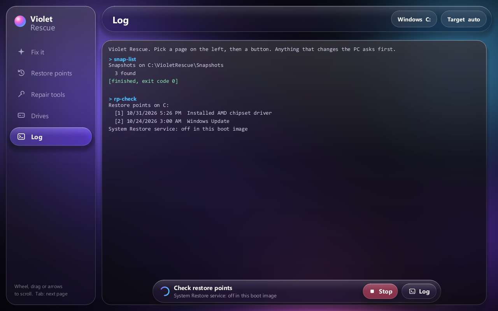

Windows repair · from a USB stick
Your PC won't start.
Your PC won't start.
Violet Rescue will.
Boot it from a stick and fix Windows 10 or 11 with big buttons: take out the update that broke startup, undo half-installed updates, rebuild the boot files, put the registry back, and copy your files off first.
Windows 10 and 11Runs in the Windows Recovery EnvironmentNo internet neededAsks before every change

Go down the list
1
Remove the bad update
The most common reason a PC stops starting after Windows Update.
2
Undo pending updates
Rolls back updates that were half installed when it broke.
3
System Restore
With a safer mode, and Violet snapshots for when System Restore itself fails.
4
Fix the boot files
Rebuilds what the PC needs to find Windows.
5
Copy my files off
To any other drive, before you try anything bigger.
+
Repair tools
SFC, CHKDSK, DISM, drivers, startup items, rollback by date: 21 commands.
See it




Early release. Violet Rescue 0.1 has been booted and used on a real broken PC, but not tested across many machines. Copy your files off before any repair, and read what isn't proven yet.